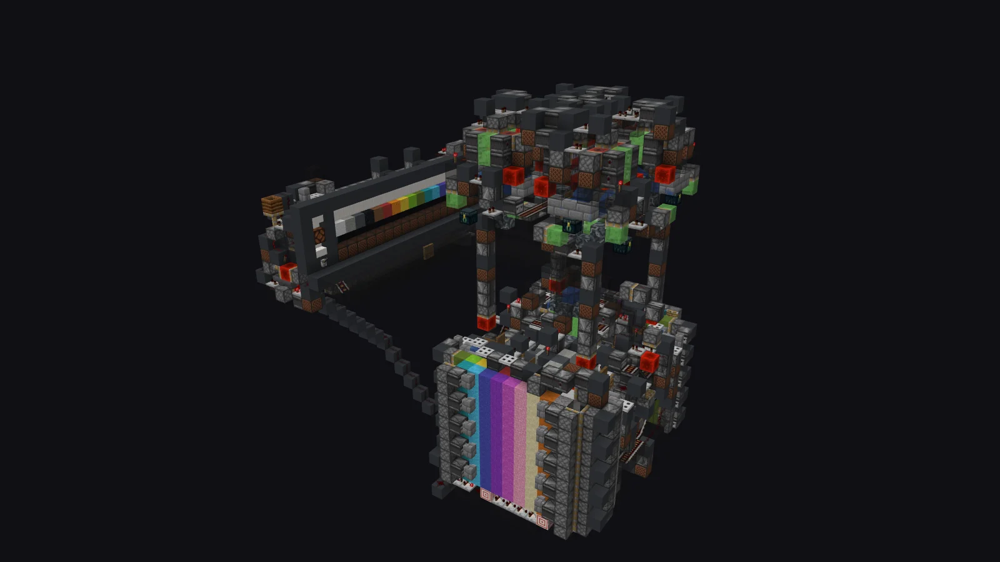

Set up in three steps
Pick the type, the version, the build. The jar is downloaded, the EULA accepted, the folders created, the port and RAM set. Already have a server folder or a modpack? Import it as is.
Windows 10 / 11 · free · no account
Kubic creates, downloads and runs your local servers — Vanilla, Paper, Purpur, Folia, Fabric, Forge, NeoForge, Velocity — and launches the game itself. Java included, no command line, no file to edit by hand.
[18:04:12] [Server thread/INFO]: Starting minecraft server version 1.12.2[18:04:13] [Server thread/INFO]: Loading properties[18:04:15] [Server thread/INFO]: Preparing level "world"[18:04:18] [Server thread/WARN]: Can't keep up! Did the system time change?[18:04:21] [Server thread/INFO]: Done (6.284s)! For help, type "help"
3D schematic viewer
The Schematics screen opens Litematica, WorldEdit and structure files in real-time 3D, with the game's own models and textures. Below is that screen as it looks in the app — and the 3D view is live: it runs on the app's own engine, right in your browser.
Try it: drag to turn the build, cut it with the layer sliders, or fly through it.

Drag to turn · scroll to zoom · Shift + drag to move Swipe sideways to turn · pinch to zoom
.litematic), WorldEdit / Sponge (.schem) and structure block (.nbt) files.One wizard, three steps, nine server types
Versions and builds fetched live from Mojang, PaperMC, PurpurMC, FabricMC and the Forge and NeoForged Maven repositories. Forge / NeoForge installers are run for you.
Server manager
A dozen tabs per server. What used to take an SFTP client, a text editor and a command window now fits in a single app.
Pick the type, the version, the build. The jar is downloaded, the EULA accepted, the folders created, the port and RAM set. Already have a server folder or a modpack? Import it as is.
Coloured output, filter by text and level, command history on the arrow keys, quick commands, log export.
server.properties, explainedSome 50 keys documented and grouped, with typed controls — checkboxes, sliders, lists. Raw editing of the file is still one click away.
Full browsing, text / JSON / YAML / TOML editing, drag and drop, upload and download, zip and unzip, recursive search, image preview.
A catalogue filtered by the server's loader and version, one-click install with dependencies resolved, enable, disable, local jars welcome.
Operators with their level, whitelist, player and IP bans. Through the console while the server runs, straight in the JSON files otherwise, UUIDs resolved with Mojang.
Activate, rename, duplicate, reset, delete, import a .zip.
The test world and the serious one can finally live side by side.
A top-down map of your world, rendered straight from its region files — no plugin, nothing to install on the server.
Full ZIP archives, worlds only or configuration only, one-click restore and automatic rotation of the oldest ones.
Restart, backup, stop, start, a command or an announcement — at a regular interval, every day or every week.
One port per server, local and public addresses, automatic port opening on your router (UPnP), port test and server ping. More below.
Minimum and maximum RAM, JDK choice, JVM flag presets (Aikar's, basic or your
own), auto-restart after a crash. Closing Kubic sends every server a clean stop.
Play together
The Network tab opens the port on your router by itself, checks that it works, and can give
your server an address that is easy to share — yourname.kubicmc.com — which
follows your IP when it changes.
Player profiles
Click a player to open their profile: inventory, hotbar, armour, offhand, ender chest, health, hunger, experience, game mode, dimension, coordinates, spawn point — and their statistics: play time, deaths, mobs killed, blocks mined.
Launcher
An instance is a version with its own memory, Java, resolution and account. By default it
uses your existing .minecraft: your worlds, mods and options stay where they are.
A separate game folder is one checkbox away.
.mrpack, CurseForge, or a plain .zip of mods. Duplicate mods are flagged, and an instance's mods export as a .zip..schem, .nbt) sorted by version.Java
Compatibility is a range, not a minimum: a Java that is too recent breaks things as surely as one that is too old. Kubic detects the JDKs you have, picks the one that fits, warns you when none does — and installs the right one in a click.
| Minecraft | Java accepted | Recommended |
|---|---|---|
| ≤ 1.16.5 | 8 to 11 | 8 |
| 1.17.x | 16 + | 17 |
| 1.18 – 1.20.4 | 17 + | 17 |
| 1.20.5 – 1.21.x | 21 + | 21 |
| ≥ 26.1 | 25 + | 25 |
Eclipse Temurin JDKs install from the settings: no Windows installer, no
PATH changed, no registry touched. Each archive is checked against its SHA-256
hash before extraction.
JAVA_HOME, PATH, Program Files, Adoptium, Microsoft, Zulu, Corretto, BellSoft and the official launcher's runtime are all inspected. A runtime installed by Kubic takes precedence over a system JDK of the same version.
Download
A regular installer. No account, no subscription, no telemetry.
.exe installer · version 1.2.0 ·
116 MB · released 15 October 2026
7b0cee41a367530838095a128b348f860b091c4ea195528e34c1b18add20f1ab
To check the file before running it, compare this hash with the one PowerShell gives you:
Get-FileHash .\Kubic-Setup-1.2.0.exe
Run the downloaded file. Windows SmartScreen may show a warning: More info → Run anyway.
Choose the install folder, then open Kubic.
Create a server or an instance. Any Java it needs installs from the app.
~/MCServerManager/, settings in %APPDATA%/mc-server-manager/. Both folders can be moved.Questions
Yes, entirely, under the MIT licence. No account to create, no paid feature, no ads.
To play on public servers in online-mode, yes: you need a Microsoft
account that owns the game. To host and join your own local servers, the offline account is
enough.
The installer is not signed with a commercial certificate, and SmartScreen warns about every publisher it does not know yet. Click More info, then Run anyway. To be sure the file is the one we published, compare its SHA-256 hash with the one shown in the download section.
No telemetry, no usage statistics, no crash reports. Your servers, worlds, backups and accounts stay on your PC. Kubic only goes online to download what you ask for (game versions, server jars, mods, Java) and to sign you in with Microsoft. Two optional features go further: a custom address sends its name, your port and a public key to Kubic's service and publishes your IP in DNS; an AI companion on Claude sends its exchanges to Anthropic. Everything is detailed in the privacy notice.
Yes. The Network tab opens the port on your router automatically when it supports
UPnP, and walks you through port forwarding when it does not. It also gives you an address
to share — your public IP, or an optional yourname.kubicmc.com. Kubic does not
host anything for you: the server runs on your PC.
Two at once, each on its own port. You can create as many as you like.
Each server receives a clean stop and the time to write its chunks before
the app closes. Nothing is killed abruptly.
Yes. Import an existing server takes a server folder as it is, downloading
nothing; the Worlds tab imports a .zip; and modpacks import into a server or an
instance.
English, French, Spanish, German, Italian and Portuguese — switch at any time in the settings.